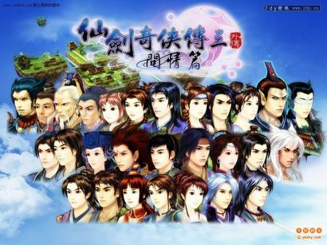
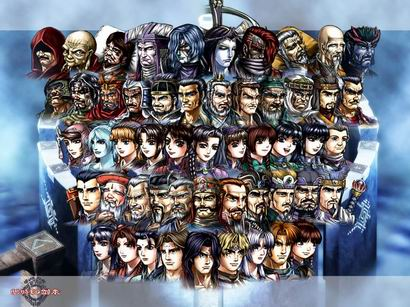
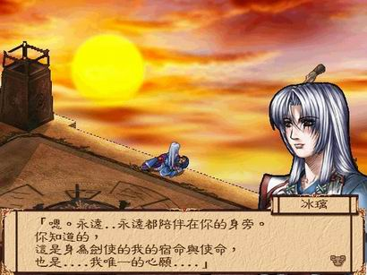
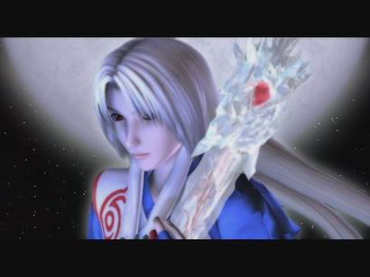
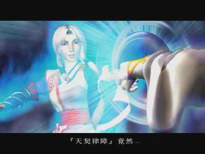
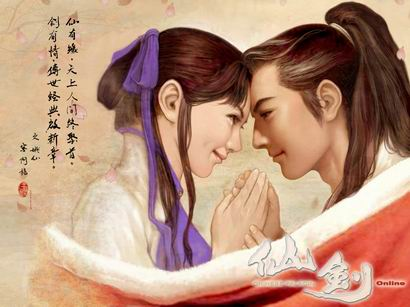
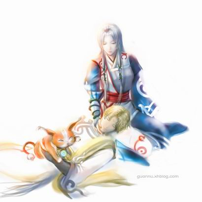

在谈论这问题之前，先自我介绍一下我的RPG游戏经历。本人是幽城幻剑录的爱好者，但不算是幽城的死忠级玩家，我在幽吧的发言常常被人评为火星文也是家常便饭。我虽然喜欢幽城，但幽城的前作--神魔至尊传，本人没有玩过，只在各天地劫系列的忠实玩家口中听闲其风采。本人甚少地玩RPG游戏，也许是这个原因，轩辕剑系列是一款都没有玩过(天之声：你还是中国人吗?)。我对于仙剑的印象可说是模煳得很，除了最近通关的仙剑三(打的是完美结局，其馀结局在网上看视频)，也在若干年前玩过DOS版的仙一和仙二。仙二是很多玩家批评的一部，所以我对它的印象不深。至于仙一，我当年也是玩得极其兴奋，以当年的水平，能作出像仙一那般富有游戏性和戏剧性的作品实在叫人赞叹，但事隔多年，对于其故事也是忘了七八成，大概只记得结局是赵灵儿�咨�自己救世，遗留下李逍遥只身长叹。所以，我这篇讨论，各位可以看成是一个接触过《幽城幻剑录》和《仙剑》系列的一个旁观者对两部作品的看法。只不过是我更喜欢幽城，讨论中不免有点偏袒维护幽城，但我的目的没有比高低之意，只是想客观地分析两款游戏在游戏市场上的不同待遇。你可能会问，幽城是一个游戏，仙剑是一个系列，如此还能比较?那是因为本人觉得幽城在其系列中是较为特殊的一部，而仙剑系列，虽各部主题不同，但基本上是同一概念上衍生的产物，所以也就在本文中当作是单一作品讨论。由于本文重点不是轩辕剑，我也没有玩过轩辕剑或其他国产RPG游戏(剑侠情缘倒是玩过一两把)，所以本文仅讨论仙剑和幽城。
仙剑和幽城虽同为中国式RPG游戏，可是两部作品的形式和主题不尽相同，但两部都不失为国产RPG的经典之作。本人在这曾有一小疑问，幽城乃是台湾的汉堂公司制作的游戏，还能算是国产吗?但基于幽城在内陆也有推出过简体字版(智冠代理，我也是最近才得知)，姑且也把它视作一款国产游戏。在本人眼中，两款同是经典之作(尽管我对仙剑的了解不是很深)，所以不太认同两款作品在市场上的差别待遇。思前想后，把这现象的原因归纳为几点(大家也可以跳过前两点，因为后两点才是本文的重点)：
1、游戏性
虽然RPG游戏最重要的部份是剧情，但既然被叫做RPG(Role-PlayingGame)，而不是RPN(Role-PlayingNovel)，游戏性逊色的游戏自然会被大部份玩家们淘汰。如果哪个玩家玩游戏只求剧情，那他去看小说，看电视，或者玩AVG(AdventureGame，说白了就是文字冒险游戏，是多了人物场景和音乐的小说)都可以了，干嘛要玩RPG呢?游戏性我想很多帖子已经谈过了，也不是本文重点，但对两款游戏的成功也有很大关系，所以也就略为分析一下。
仙剑系列跟幽城也继承传统RPG的一贯作风，游戏的流程不外乎打敌人，存钱买装备道具，走迷宫，打BOSS，发动剧情，获得重要道具等RPG主要原素。重点当然是发动剧情了，这样才可以把扮演的游戏角色一步步推向结局。可是两者游戏性中的极大差异就在这里，仙剑游戏故事路线明确，只要看完全部对白，基本上是知道要怎么走下一步的。而幽城不同仙剑，游戏的路线模煳，看完了对白有时候还得自己摸索一翻才能继续进行故事。有时候玩家得到了一些提示(打方说要找找某人)，但如果不细心的话你很难发现到达下一节剧情的重要场景，比如说在第一次千年回忆以后，你在没有任何提示下逛街，你不会知道其实你要去古董店。我还记得在沙州城见到伊丝朵后，不知在哪里才可以再找到她继续剧情，最后看了攻略才知道是客栈的最后一间房间，一般来说住客栈只会走到转角的房间，哪会想得到最后一间有重要的事情呢?在走迷宫和解迷方面，仙剑应该会令玩家们感到更大的欢喜，或许仙迷们都觉得仙剑的迷宫是又长又多拐弯，敌人又多，还有很多麻烦的机关设置，但只要用心地走，这些迷宫根本难不了玩家。幽城却不同，迷宫倒是没有仙剑的长，但晦涩的文字暗示和独特的解谜方式往往令玩家们一头雾水，想当年那个沙漠迷阵和高昌古城令多少对这游戏有好感的玩家轻易地放弃。幽城往后的剧情里更出现了如封闭九浑天动仪的机关等极高难度的迷题，迫着玩家们叹息地放弃，要通过这些迷题也只能是看攻略或发帖问老玩家们的意见。
支线剧情在两款游戏中扮演的地位更是天壤之别。在仙剑，支线剧情基本上起的是额外奖励玩家一些特殊道具和让玩家升升级的角色，在仙三有特殊招式的习得。支线剧情往往是到达了一个特定场所后跟某些人谈话就可以遇上，没有太大的规定，没有特定的时限。在幽城，支线剧情很隐敝，幽民们都说在没看攻略的情况下没有人会问一个哭闹的小女孩五次。另外，支线的遇上条件极为严苛，每个支线都限定在某一特别时段内完成，过了时限就错过了。而且事件和事件之间有关连，错过了一个支线就等于错过了整个支线剧本，不幸运的玩家也只能重新再来了。幽城最完美的两个结局需要完成大部份支线，在这艰难复杂的支线系统下，挑战不看攻略的玩家们打出的往往是最坏结局。因此，吧中有幽民扬言，“如果有谁不看攻略的情况下第一次打出最完美结局的话，他就是神人了”。如果说仙剑是一款有恒心，就算不看攻略也可以在一段时间内通关的游戏，那么幽城便是那种即使有恒心，没有攻略的话玩上半年以上都没法通关或者没法打到完美结局的游戏。仙剑在游戏性方面是比幽城成功多了。但特别值得一提的是，幽城的战斗系统节奏轻快，半即时的方式也增加了战斗的紧张感，在这里可以说是比起仙剑回合制的战斗略胜一筹，只是幽城整体上的游戏性是很难比得上仙剑。
2、角色画风和三维过场动画
大部份仙迷对仙剑人物的评价往往是面容清秀，栩栩如生;女角色更是天仙下凡，人间罕有。这也是不争的事实，放眼现在仙剑各系列中的主角群，有哪一个男主角不是帅哥?有哪一个女主角不是美女?仙剑的绝大部份主角都是美不可言谕的。虽然每个人对”美”的定义各不相同，但大体上，仙剑的角色在造型上除了符合一般人正常的面容比例外，大部份重要角色还额外多了一份唯美的秀气。我会的形容词不多，但大致上仙剑的角色就是这个状况。另外，我还发现了一点令仙剑的角色美上加美的关键。虽然我没有玩过问情篇和仙四，但从角色人物图片(就是对话框那种)中可以看出，从仙三开始，角色的面部几乎是异于寻常的白，无论是男角(看景天和南宫煌就知道)还是女角，主角还是配角，只要不是丑角，这份白往往就会浮现在角色的脸庞上，令这些角色都是出尘脱俗，不像是在人世间打滚的粗俗侠客，反而更像是具有天仙气质的游侠。这也正正符合了标题《仙剑奇侠传》那个「仙」字。至于仙一跟仙二，这种白好像不太明显，但秀气的感觉几乎在所有主角中都能体会得到。

反观幽城，角色们的面容不是像仙剑的那般清秀，而是较为贴近写实：像主角夏候仪略带西方轮廓(因为金发?不清楚)的面孔，古伦德粗汉般的结实宽大面孔，以及慕容小妹子精灵可爱的面孔。至于反派角色，像是赫兰铁罕，周崇朱浩，以及最终BOSS的罗�T神，往往就是一副阴险狡猾，大奸人那般的嘴脸，很少像有像仙三里的最终BOSS重楼那么帅。其实说起来，幽城里的角色之间的脸孔有很大的不同，这也是幽城故事里人物鲜明的特色，不同性格的人会有跟其个性相衬的面孔。比如葛云衣，她虽然只是一个八岁小女孩，但因其「继魂之仪」的关系，稚嫩的脸孔上有着一种如成年人般的成熟稳重。而皇甫申这个逆正逆邪的角色时而对爱人温柔备至，时而面对敌人时的窃窃偷笑，都在他那张大宽脸上完美地表现出来，我在这里不得不配服汉堂画师的手艺。可是，尽管幽城的角色们各有特色，他们都有一个很重要的失败点，就是他们的脸部都比较阴沉，看习惯了的幽民倒没觉得什么，但一向喜欢清雅脱俗角色的玩家们就很难看得上这种阴沉的画风，所以也就不怎么觉得幽城的角色们好看了。我还记得有一位仙迷说过，“幽城的人物设定，我看了就想吐!”我想可能就是因为这种阴沉画风和仙剑清雅脱俗的画风相比较之下的结果了!

为什么幽城角色的脸那么阴沉呢?原因就是因为他们的面部，脖子上，和浏海下有太多的阴影，和角色原本的脸色混在一起，导致了角色在整体上都是一种阴沉的奇怪感觉，角色本身的特色也被盖过了不少。在这里，我不得不提一下幽城的女主角----冰璃。她是故事的核心人物，也是幽城中最美丽，有如天仙般的角色，本人觉得因为是有了她，整个幽城故事才有了不可代替的色彩。冰璃确实并非人世间的平凡女子，所以她的造型也异于常人，游戏中对她的描述也就只有「雪肤红眸，素发如瀑，俏颜冰若，翩姿悄静」十六个字，可这十六个字已经完美的表现出冰璃的美了，再多的字反而是多馀的，会把这种特殊的美感夺走。可惜，冰璃这种天女般的存在，同时也是这种阴沉画风的最大受害者。大家请看看那张夕阳下霍雍枕冰璃大腿的图，对话框中的冰璃脸部和脖子上雪白的皮肤都被头发的阴影盖上了，两种极端的颜色混在一起，使得整体上是一种很别扭的感觉。难怪有一个激动的仙迷看了这图后说她是“猪头女猪，丑到跟猪头一样，那就是一坨屎”(哗，谁扔我榴连?)。

2D的人物画风讲过了，现在就说一下3D的画面吧!仙剑系列中最令人叹为观止的过场动画，我相信就是神将飞蓬和魔尊重楼的那场惊天地，泣鬼神的决斗了。在这个动画中两个主要人物的脸部轮廓清晰可见，而且都非常成功地带有之前提到的那种仙剑角色独有的清雅脱俗和「白」，其中从他们的造型又不难看出他们对立的立场，同时我们也看得到那股从骨子里透出来的那种帅气。场景也是做得非常细致，新仙界中很多虚构的建筑也做得跟真的一样。最后当然是要大赞的他们的动作了，非常流畅，丝毫没有停滞感。这种流畅的三维打斗场面，我能想得出可以跟它媲美的就只有那部FF7-AC电影了。想必看过这动画的人都会这么认为吧!以当年的水平，国人能做出这么高水准的三维动画，实在让国人骄傲!在往后作品中的三维动画(我虽没有玩过，但看过视频)同样精彩，使得仙剑系列增色不少，这里就不再多说了。
好了，又说回幽城了。幽城的三维过场动画其实做得也很好，至少在动画中，人物设定中的阴影部份都变得不明显了，可能是在动画中制作人员非常注重光源的分布吧。还有，冰璃受阴沉画风的影响在片头动画里也不再那么明显了，她那幕月下抱剑把她独有的美态全发挥出来了，以之对比她的人物头像，简直就是一个天一个地!场景方面也做得不错，虽没有仙剑的宏大场景，但配合故事主题的凄凉沙漠做得很逼真，连一只蝎子在沙上走过时留下的脚印也呈现出来，这个要赞一下!要赞的说过了，那么要评批的地方也来了。。。人物的表情和动作都非常生硬，没有仙三的流畅，我每次看到动画里的古伦德时，难免都会注意到，他把枪插~进破墙里再拔~出来那动作很缓慢，可是再把枪回转扛回肩头上那动作就突然变快了。夏候仪从深深注视着罗�T标志到略抬头进入回想这期间的脸部表情变化也不自然，有点像机械人换表情的感觉。个人认为最好的部份就只有冰璃月下抱剑那幕了：她那飘动的头发，脸部从哀伤转为微笑的细微表情变化，做得十分自然和流畅。至于结尾的动画基本上也有之前提到的缺陷存在，最离谱的便是冰璃在念咒转身后嘴巴张得大大的，表情十分难看，破坏了整个结局的唯美感觉。幽城的三维动画的确没有仙剑系列的那么好，但身为一个幽迷，我还是要为汉堂辩护一下。幽城推出的时间是2001年，比仙三早上差不多两年，三维动画技术发展日新月异，两年之间的进步可以是很大的。可想而知，汉堂当年能作出这种水平的动画已经是很了不起了!再说，汉堂在2002年推出《寰神结》以后就破产，我估计汉堂在制作幽城时的资金并不是很多，所以不可以花太多钱制作费用昂贵的三维动画。


3、故事的主题性质和年青大众的「爱情」风气
这一观点是我个人认为最合理的一个，也是我应该重点细说的一个(前面的观点好像说太多了…)
要说上这一点，我就要从现代中国社会的风气说起。大家都知道，封建时期的中国十分保守，男女之间如果不是夫妻或者没有血缘关系就不应该有太亲密的接触，也就是所谓的「男女授受不亲」。再者，婚姻在古中国只视作是家族繁衍下一代的重要过程，也就是「传宗接代」的思想，社会的风气只在乎婚姻的结果(是否门当户对，是否有利家族结交)，婚姻的过程往往不被重视或者被忽略，导致了「盲婚哑嫁」的局面。我们都明白，人类本来就是群体动物，人与人之间亲密的接触(不管有没有血缘关系)对人类来说是非常重要，也是人的愿望;而跟什么人结交是人应有的选择权利，跟哪个人结成连理应该是每个人自己作出的决定。中国的封建思想在很大程度上打压了中国人在男女关系之间的「自由」，违反了人天生就有的权利和愿望。这种状况在中国社会持续了超过两千年(我想说那些古中国思想家害了很多人)，最后通过中国的革命逐步瓦解，形成了现代中国社会中男女关系的新局面。
如果一个小孩很想吃冰淇淋，但他妈妈一直不让他吃，却在某一天突然允许他吃，而且是给了他很多钱，任他吃多少都可以。你想，那男孩会怎么做?他很自然地买了一大堆冰淇淋大口大口地吃起来，也不会管肚子受不受得了。这例子说明了一个道理：如果人们对某种事物的渴望被长期压抑，但突然间得到了对这种事物追求的允许，那他们对该事物的追求欲望就会变得非常非常大;就像你越用力把篮球打在地上，它会反弹得越高这个道理。现在的中国社会就是这个样子，中国人在男女关系上的「自由」被压抑太久了，人们就开始盲目地对这种「自由」进行追求。�B管封建思想的遣风还在暗中作怪，民族的文化和道德伦常还在鼓吹中国人要约束这种「自由」，现在的中国人还是大胆地追求这种「自由」，只是换了一种不明显的方式。什么方式?那就是把追求进一步男女关系「自由」的欲望演变成一种高贵的品德，也就是「爱情主义」或者「自由恋爱」等思想。
人们因为改革开放得到了更大的自由，却又因为一些残留下来的封建思想而不得不把这自由表现得含蓄一些，所以「爱情」和「恋爱」这些观念在现在中国的年青社群中显得特别重要，「爱情主义」和「自由恋爱」等思想就成了年青一代的风气和评定人的价值观。现在的流行歌曲有很多都是关于爱情的，电视剧的话，先别说很多以爱情为题材的戏剧，就连一些历史剧和武侠剧也需要加入一些爱情元素才符合观众的口味。如果一个人对爱情没有兴趣，这个人有可能会被其他人视作「怪人」。这里我说的「爱情」光是指男女恋人的关系，不包括其他种类的爱。在这一点中国人跟外国人有很大的差别，外国人所说的爱情，英文是「Love」，可是这「Love」也可以指各种各样的关系，朋友之间也可以称为「Love」，如果外国人要特别指男女之间的那种爱情的话，英文就是「Romance」或者「RomanticLove」。也就是说，中国人的「爱情」跟「浪漫」是脱不了太大的关系，只是中国人把男女恋人的浪漫关系当作是最重要的爱情，慢慢地把「爱情」变成了男女恋人关系的代名词，而原本「爱情」的意思就褪色了。
这「爱情」已经变成了现代中国年青一代所重视的重要品德，也是他们衡量一种事物价值的标准。要决定一个国产RPG的成败，最重要的也就是看它有没有好的「爱情」。问题是，几乎所有的作品都会有「爱情」的元素，那怎么去评定哪一个作品的「爱情」比较好呢?其实这也要从中国社会风气的改变说起。大家都知道，以前的中国是一夫多妻制的社会，一个男人如果是有钱，多娶几个老婆是很平常的。反之，一个女人一生只可以跟随一个男人，女人在丈夫死后通常要守寡，再嫁的例子少之又少，对婚姻不贞节的女人会被人们视为耻辱。这些就是中国封建时期的礼教伦常，其实说白了这些都是古时候男人为了束缚女性以增加自己的自由所定立出来的无理规则罢了。民革开放之后，男女变得平等，一夫多妻制被废除，取而代之的是现在的一夫一妻制。一男多女的制度突然变成一男一女的制度，尽管对社会来说是一个三百六十度的巨大转变，人们也只好去尽量适应(因为有法律约束)，不能多说什么。大势朝着一男一女的风气，被压抑良久的女性们都会非常赞成这种规则，但免不了还有少部份男性对这制度感到不适，这种状况便促成了其中一种现今社会审判男人的标准：对「爱情」从一而终的男人就是一个品格高尚的人，受人尊重;反之不珍重爱侣，对「爱情」抱着不忠诚心态的男人，就是品行恶劣的人，受人鄙视。因此，为了做到对「爱情」专一，不再出现抛弃爱侣的情况，人们只好更重视选择伴侣的过程，也就是“谈恋爱”。有时候人们不会很容易发现到底谁适合当自己的终生爱侣，也因此出现了“多角恋”的情况，这些也自然地成为「爱情」故事的重大元素。简单的说，如果一个作品能够很好地表现出这些元素：一男一女的专一「爱情」和“多角恋”(包括最后的处理方法)，现今的年青社群就会很容易接受该作品，如果再加上其他优良的元素，这作品理作当然会成为「神作」和「经典」。
仙剑系列，虽然各有不同主题(仙一的宿命，仙二的宽恕，仙三的轮回，仙三外的问情，仙四的寻仙)，但不难发现，每一个作品都刻意地描写「爱情」。所以我才会说仙剑系列都是同一个概念上衍生的产物，因为他们的主题都是要表现「爱情」。仙一的宿命就是赵灵儿要履行女娲后人的使命�咨�自己，跟李逍遥生死相隔导致李逍遥对她的终生思念。仙三的轮回则就表现在某一方离去后，留下来的一方还想继续那段情，对轮回转生后的那一方产生执着(徐长卿跟紫萱，景天跟龙葵，飞蓬跟夕瑶)。其他系列我不太清楚，但相信也跟「爱情」有莫大的关联。仙剑的每一个作品中都会有很多恋情，除了主角们复杂的恋情关系，配角们的「爱情」也是可歌可泣的，最为人知的例子应该就是仙一里蝴蝶精彩依对刘晋元的痴情吧，其他的例子仙迷们应该比我更清楚。当然，仙剑的主题元素并不百分之百是「爱情」，比如重楼跟飞蓬的惺惺相惜和酒剑仙跟李逍遥的师徒之谊都有很好的描写，但不得不说，「爱情」已经是仙剑系列最重要和不可或缺的元素。我想说，如果这个世界没有「爱情」或者社会不重视「爱情」风气的话，仙剑系列也就不会这么大红大紫，因为它起不了令大众共鸣的作用。
仙剑的每部作品都会有很多恋情，尤其是主角群，他们的恋爱关系都是一开始乱七八糟，到最后才会明朗起来的。就算一个角色可以撰择的对象超过一个(男少女多，仙三外跟仙四改了这种制度，变得更专一)，但到了最后都只会以一个男角配一个女角的形式撮合在一起。还有某些角色，在最后不幸地成了孤家寡人，但仍对所爱的人，有强烈的爱慕之情，不会因为被拒绝而移情别恋。仙剑的男女配中又会多以某一方逝去作收尾，用意是要表现出角色们的情深义重，为“伟大的爱情”定下一个明确的意义。这些就正好配合社会年轻大众推崇的专一爱情观，还外加一点浪漫的悲剧元素去震憾人心，使他们被结局俘虏。因为仙剑的主题是「爱情」，大众提倡的又是“伟大的爱情”，所以玩家们对仙剑的接受力较强。古代人像现今社会的人一样喜欢谈情说爱，没有受到封建思想束缚的这种概念，现在已成了武侠剧，小说和国产RPG游戏围绕的一大吸引力。试想想，如果中国古代的封建社会中人们都会像仙剑或武侠剧那般对「爱情」执着，那么现代社会才出现的「爱情」风气就会显得更加高贵了。说句失礼的话，仙剑系列就是很好地利用了人们对「爱情」追求的心理，再加上本身的特色和精彩的制作水平，相得益彰，才会令一众玩家着迷，成为经典。
幽城的主题性质又如何呢?幽城的故事并不是没有「爱情」，试问一个感人的故事怎么可能没有「爱情」呢?但比起这个，幽城的故事更着重表现自己的主题----宿命(碰巧也是仙一的主题，所表现的形式也有几分相似)。要说到幽城的「爱情」，就先提一下幽城的几位主角：男主角夏侯仪，第一女主角冰璃，第二女主角慕容璇玑。幽城主要的「爱情」线就是夏侯仪跟冰璃的特殊关系，这里要说明一下，他们俩不像李逍遥跟赵灵儿那样是在某一地方偶然地遇上的，他们是在上辈子打从出生那刻开始就在一起的。故事中男女主角因为某些原因分开了千年(一个是沉睡千年，另一个是在千年后转生)，到后来重遇后他们便慢慢回忆起千年前的往事，才确定了他们之间的恋情。这“宿命”的恋情或多或少约束了恋爱上的自由，否决了夏候仪的爱侣对象选择权，所以这「爱情」对追求“自由恋爱”的社会大众来说讨不了好。虽然幽城的第一女主角剥夺了恋爱对象选择权，但第二女主角的作用就是向玩家归还这种选择权，从而可以打出两种不同的女主角结局：冰璃的完美结局和慕容璇玑的次完美结局。这个其实也是幽城的一个重大缺憾，比起夏侯仪跟冰璃的「爱情」，夏侯仪跟慕容璇玑的「爱情」显得没有什么份量，次完美结局也跟完美结局没两样，只是把重点从冰璃换成慕容璇玑。再说幽城的主题是宿命，也就是男女主角如何挣扎摆脱宿命，这样慕容璇玑就显得特别多馀，因为她的身份没有男女主角那么重要，她跟男主角的相遇也只算得上是偶然，跟主题宿命不太沾边。我不知道汉堂是因为潮流还是想为玩家提供更多游戏性才会加入第二女主角这元素，但我认为，夏侯仪，冰璃和慕容璇玑之间的三角关系绝对是一个败笔。这也负面地影响了幽城的三结局体系，当中只有完美结局(也就是冰璃结局)才是最感人，其馀两个结局倒像是硬加上去凑数的。
幽城的故事没有像仙剑的对「爱情」有很重的着笔，所以故事里你很难见到如“你到底喜不喜欢我啊?”，“我看你是看上她了吧!”或者“我最喜欢的当然是你!”这样的对白，也很少会看到女生们的撒娇。幽城对「爱情」的描写比较含蓄，没有现代人那么开放。当我看见幽城的男女主角在说到情爱之事时脸红的样子就感到很别扭，原因是幽城的故事里根本就没有谈情说爱，或者说得准确一点，是有谈情，但没有说爱，角色们不会很露骨地说“爱啊”什么的，所以他们的脸红完全是多余的。幽城的「爱情」经常以一种含蓄的形式表现出来，比如仙剑中的“我最喜欢的当然是你!”和“你到底喜不喜欢我啊?”在幽城里会换成是“你是我心目中最重要的人!”和“我不知道我在你心中有多重要。”等等…幽城这种故事表达方式跟现代「爱情」风气背道而驰的做法，使得很多人都看不出幽城的「爱情」，或者感受不到幽城的「爱情」气氛，再加上第二女主角的乱搅和，使得夏侯仪跟冰璃之间的关系更淡了，而「爱情」这元素便好像是在幽城里蒸发掉了。如果一个作品缺乏了「爱情」这个要素的话，自然是失败了。幽城虽然有「爱情」，但不明显(反而同系列的寰神结的「爱情」表现得非常明显，可惜只是半完成品，剧情不是上品)，很难让玩家们看出来，也就受不到大众的喜爱。
幽城的结局也不像仙剑那样以男主角思念逝去的女主角为终结(或者反过来)。男主角夏侯仪把这种思念转化为对世人的仇恨，从此踏上了不归的邪恶之途。幽城的反派角色皇甫申也有相同的心态，当他失去自己的爱人后就更确信自己对世界的报复行为。他们唯一不同的地方就是，夏侯仪是在最后才泯灭自己善良的本性，而皇甫申是打从一开始就想对世界进行报复。两个角色对人世的仇恨加起来，比起「爱情」，这种结局更像是要提倡发泄对世界的种种不满。撇开「爱情」观不说，这种结局跟“爱”也相差甚远，社会不可能接纳这种失去了爱人就要向全世界报复的偏激心理。社会大众如果都有这种心理的话，这个社会便会充满仇恨，变得相当不和谐。反之，如果幽城把最后的结局改成主张「爱情」的话，这也会变得不伦不类。夏侯仪本身的使命便是要毁掉人世，但出于对人世的喜爱曾经产生要保护它的想法，然而在最后因为被背叛而重返灭世之途，这样才符合宿命的主题。总而言之，幽城的故事跟「爱情」格格不入，也难怪它不能在现代的中国社会上取悦大众的口味。


4、万恶的智冠和宣传上的乏力
这是很多幽民都同意的观念，也是最为中肯的观点。
幽城是台湾的汉堂国际推出的游戏，而在中国内地推出的简体字版是由智冠代理出品的。汉堂制作游戏有个宗旨，那就是只管做自己认可的游戏。据说，汉堂花了两年及耗费大量的人力物力，精心地做出《幽城幻剑录》这部经典。可惜，就算一个游戏再完美，如果没有人知道，怎么样也不会红的。汉堂自己只顾制作自己认可的游戏，不重视对游戏的宣传。虽然如此，幽城在台湾本土推出的时候还是很受观迎的，在2002年《游戏之星GameStar》的台湾年度最佳电脑游戏选拔中，幽城获得了“最佳剧本”及“最佳动画”两个奖项。可是，在这讯息万变的社会中，欠缺宣传对一个作品可谓是致命伤。我想汉堂其实也是迫于无奈，由于制作幽城的�m资严重，导致汉堂财政上出现大危机，便没有钱去宣传幽城，这也同时导致了《寰神结》制作上的草率。没有良好的宣传，同时还有更多新颖的游戏面世，幽城的名字才会慢慢地在游戏市场上消失。
在中国方面，幽城遭受的命运更是惨不忍睹。首先，有一位幽民告诉我，在幽城推出的前一年，被评为轩辕剑经典的《天之痕》推出，成为了当时(甚至现时)的大热国产RPG游戏。在这种冲击下，幽城的在国内的推出就显得不起眼，更别说会受到大众的青睬。《天之痕》的经典也令很多国内玩家期待轩辕剑的续集，对于其他新游戏的推出不太热衷。除此之外，幽城不红的主因，最令人气愤的便要说到幽城的中国大陆代理公司―万恶的智冠。智冠这个公司对幽城的推广很不负责，除了没有大力宣传幽城外，有些幽民更指出国内推出的简体版幽城不光是包装过于简陋，用料低劣，还有一些包装版本内含的攻略书及说明书出现缺页的情况。还不止这样，现在汉堂不在，按理说幽城的最终版权应该归属智冠。然而最近市面上有一款手机RPG游戏，名为《剑侣情缘----冰剑柔情篇》，其故事内容跟幽城的故事简直是一模一样，只是改了角色名字和地名等等，原本故事改头换面就当成是另外一个游戏推出。这个严重违反了幽城原故事版权的行为，智冠却不闲不问，可见智冠对幽城在中国的销售及被侵权行为根本不在乎。我甚至怀疑，其实是智冠自愿把幽城的故事版权卖给那个无耻的手机游戏商，并且完全同意其窜改行为，只为赚取一点利润。有一位无奈的幽民说过，现在幽城已经成为“标本”了，因为幽城的名字已死，其他人便把幽城的“尸体”加以利用，达到自己的目的。作为一个幽城的爱好者，对这种事除了万分愤慨之外，就是为幽城的不幸感到惋惜。
结尾补充：
我没有从故事剧情方面去分析这个现象，因为本人不太会分析故事的好坏，再说各人观点不同，也很难说哪个故事比较好。另外，我觉得幽城的失败跟故事内容没有太大的关系，这方面的分析我就省略了。各位如有兴趣比较两者之间的剧情，大可以自己亲身体验两个作品，自行比较。
本文当中提到到大部份是我个人的观点，跟幽城幻剑录吧的人没有关系，如有借用他们的观点，我已经在文中说明。另外，除了学校的功课外，我甚少写文，这也是我第一遍游戏讨论文，所以文笔有点生硬。如果文中所提的资料有不实之处，欢迎指出。观点的话，我认为只有你同不同意，没有对不对。如果你不同意，也请你说出你的观点和不同意本人观点的原因。
如果你看得起本人的文章的话，欢迎转载!
以上!!! |